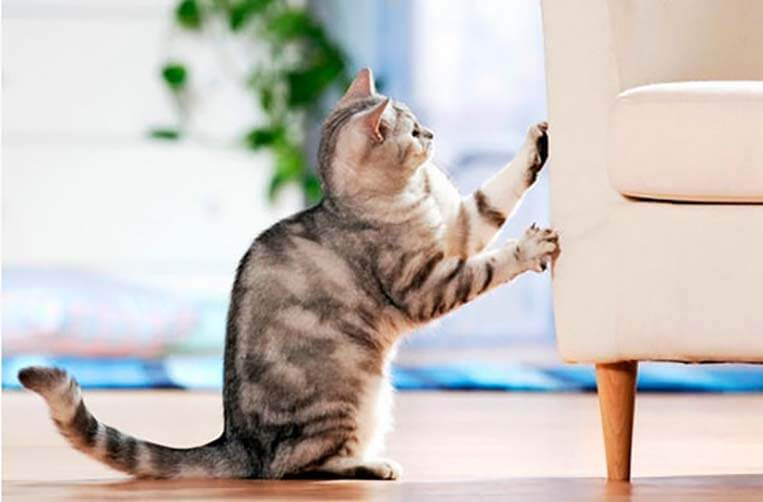
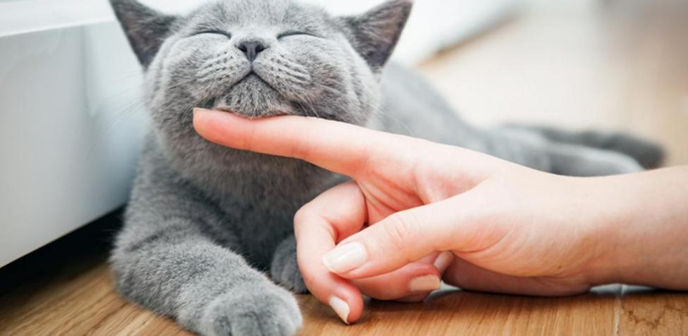
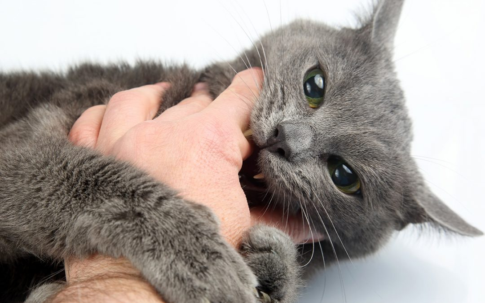

Gatos y Humanos
Articulo realizado por Sebastián con el fin de brindar información acerca de los gatos.

Articulo realizado por Sebastián con el fin de brindar información acerca de los gatos.
Los gatos les encantan rascar, tanto árboles como muebles y esto se debe porque es una forma de marcar su territorio, aunque otras veces simplemente descargan todo el estrés encima y de paso hacer un poco de ejercicio.
¿Alguna vez escuchaste a tu felino ronronear? Esto es debido a que ellos se encuentran en un estado de felicidad, puede que esté disfrutando de algo en ese momento como las caricias o la atención que le brinda el dueño.
Si un gato te muerde puede ser por varios factores, pero principalmente es porque hiciste algo que no les gustó (como acariciar su estomago) o simplemente es una forma de mostrar cariño.
